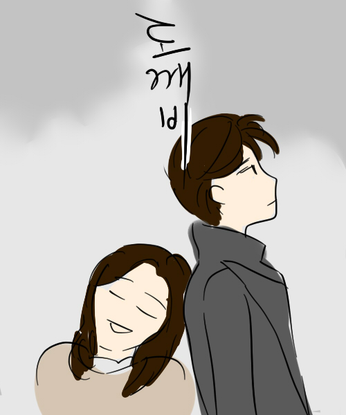

|  | 제목 : 도깨비 | 연출 : 이응복 극본 : 김은숙 |
| ▶작품 소개 불멸의 삶을 끝내기 위해 인간 신부가 필요한 도깨비, 그와 기묘한 동거를 시작한 기억상실증 저승사자. 그런 그들 앞에 '도깨비 신부'라 주장하는 '죽었어야 할 운명'의 소녀가 나타나며 벌어지는 신비로운 낭만 설화 | ||
| ▶제작자 리뷰 연상 좋아하는 여자가 보기 좋은 듯! 동양풍 느낌이 나는 로맨스 드라마 메인 커플보다 서브 커플이 더 매력적이다...! |
||
| 제작자 평점 ★★★★★ | 최고 시청률 20.5% | |
| 장르 : #개그 #판타지 #로맨스 | ||